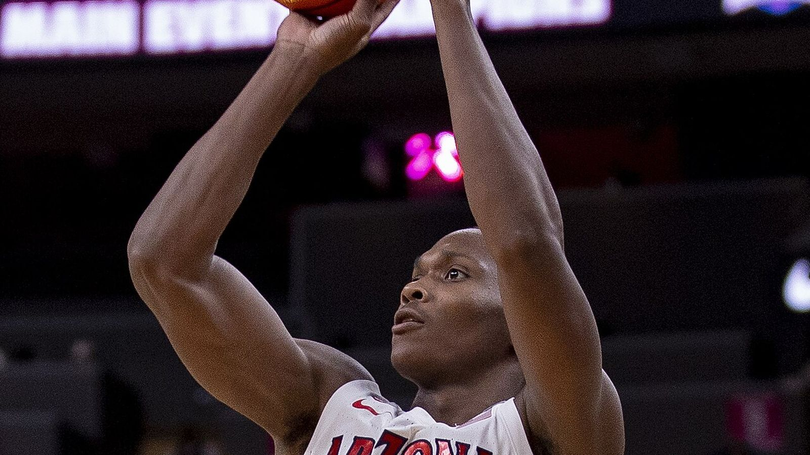

ベネディクト・マチュリン、 ペリカンズ入り合意 —— 2年1600万ドル、クリッパーズへのQO撤回で移籍実現
ニューオーリンズ・ペリカンズが、ベネディクト・マチュリン(24)と2年1600万ドル(プレーヤーオプション付き)の契約に合意したと、ESPNのシャムズ・チャラニア氏が日本時間8月26日に報じた。

クリッパーズへのクオリファイング・オファーを撤回して移籍
ESPNによると、マチュリン側はロサンゼルス・クリッパーズに対し883万ドルのクオリファイング・オファーを撤回するよう交渉。これにより制限付きフリーエージェントの立場を外れ、より条件と保証の良いニューオーリンズへの移籍を実現させたという。
長期の大型契約より身軽さを優先
ESPNは、マチュリンが総額の大きい長期契約(球団のコントロールがより強くなる)よりも、身軽さと来夏の完全なフリーエージェント権取得への最短ルートを優先したと伝えている。
1年以上前から獲得に動く、ラグジュアリータックス回避にも寄与
ペリカンズは1年以上にわたりマチュリンの獲得に積極的に動いており、若手コアの重要な一員と位置付けているという。今回の契約は、今シーズンのチームサラリーをラグジュアリータックスのライン以下に抑える効果もあるとESPNは伝えている。
前シーズンはペイサーズ→クリッパーズ、キャリアハイの数字を記録
マチュリンは前シーズン、アイビカ・ズバッツをインディアナ・ペイサーズへ放出する複数選手を含むトレードでロサンゼルス・クリッパーズへ移籍。ペイサーズとクリッパーズ合計54試合(先発25試合)に出場し、平均17.6得点・5.4リバウンド・2.4アシスト・0.8スティールといずれもキャリアハイの数字を記録した。ベンチスタートに回った際の平均17.5得点は、20試合以上出場した選手の中でNBA全体最多だったという。
2022年ドラフト全体6位、プロ4シーズン通算で平均16.2得点
マチュリンは2022年ドラフトでインディアナ・ペイサーズから全体6位で指名された。プロ4シーズン通算では263試合に出場し、平均16.2得点・4.7リバウンド・1.9アシストを記録している。
出典: ESPN「Sources: Pelicans reach 2-year, $16M deal with Bennedict Mathurin」
https://www.espn.com/nba/story/_/id/49732472/sources-pelicans-reach-2-year-16m-deal-bennedict-mathurin